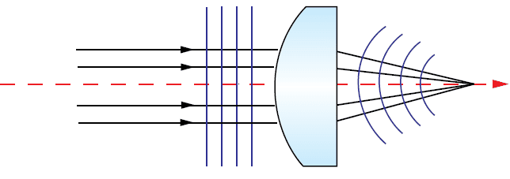
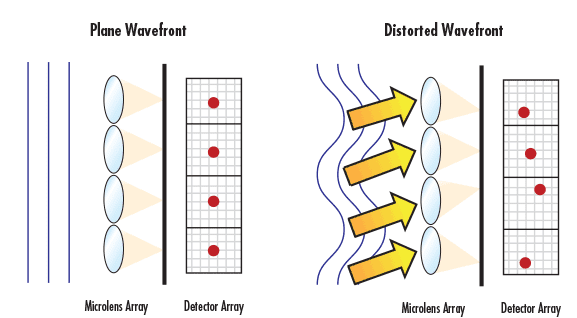

波前传感器
简单介绍
光波的波前是光波在其上具有恒定相位的表面。波前垂直于传播方向，因此准直光具有平面波前，汇聚或发散光具有弯曲波前（图 9）。光学元件中的畸变会导致波前误差，或透射或反射波前畸变。通过分析透射和反射波前误差，可以确定光学元件的像差和性能。
如下图所示，完全准直的光具有平面波前。在完美的无像差透镜后发散或汇聚的光将具有球形波前。

Shack-Hartmann 波前传感器 (SHWFS) 利用一组具有相同焦距的微透镜（或称小透镜），将部分入射光聚焦到探测器上。探测器分为几个小扇区，每个微透镜有一个扇区。完美的平面入射波前会产生一个与微透镜阵列的中心到中心间距相同的焦点网格。如果在 SHWFS 上发生了具有一定波前误差的畸变波前，则探测器上的焦点位置将发生变化（如下图所示）。焦点的偏移、变形或强度损失决定了每个微透镜的波前局部倾斜。离散倾斜可以用来重建完整的波前。

来自 DeepSeek 的介绍
好的，SHFWS（Shack-Hartmann Wavefront Sensor，沙克-哈特曼波前传感器）是现代光学系统中至关重要的测量设备。其核心作用可以概括为：
精确测量光波的波前像差，即光波相位在空间上的畸变分布。
简单来说，它能把“光波面”的形状像地图一样测量并呈现出来。
详细作用与工作原理
1. 核心工作原理
它由一个微透镜阵列和一个图像传感器（如CCD/CMOS）组成。
- 微透镜阵列：将入射光束分割成许多子孔径（微小的光斑）。
- 理想平面波：如果入射光是完美的平面波，所有子光束会聚焦在微透镜的焦点上，形成一个均匀、规则的点阵。
- 存在像差的光波：当波前有畸变时，子光束的传播方向会局部偏折，导致焦点在图像传感器上发生横向位移。
- 测量：通过测量每个子光斑相对于参考位置（理想位置）的位移量（X和Y方向），可以计算出每个子孔径内波前的平均倾斜（斜率）。
2. 核心输出
传感器最终输出的是一个波前斜率数据集。通过数学重建算法（如Zernike多项式拟合），可以将其还原成一幅完整的波前相位图，并定量分析像差的类型（如离焦、像散、彗差、球差等）和大小。
主要应用领域（体现了其作用的价值）
1. 自适应光学
这是SHFWS最经典和重要的应用。
- 作用：实时（每秒数百到数千次）测量来自天体或视网膜等目标的光波畸变。
- 流程：传感器测量畸变 → 控制系统计算校正量 → 驱动可变形镜实时改变形状 → 补偿畸变，获得接近衍射极限的清晰图像。
-
应用场景：
- 天文望远镜：补偿大气湍流造成的星象抖动和模糊，使地面望远镜达到接近太空望远镜的分辨率。
- 视网膜成像：用于眼科，获取眼底视网膜细胞级的高分辨率图像，用于疾病诊断。
- 激光通信/激光武器：保持激光束在湍流大气中传输时的聚焦质量和指向稳定性。
2. 光学系统检测与装调
- 作用：定量评估光学元件和系统的成像质量。
-
应用场景：
- 镜头/显微镜/望远镜的像质检验：快速诊断其像差来源和量级。
- 光学系统装调：指导复杂多镜片系统的精密对准，通过观察波前像差的变化来优化装调过程。
- 激光光束质量分析：测量激光束的波前畸变、曲率半径（聚焦状态）和M²因子等。
3. 人眼视觉科学
- 作用：测量人眼的高阶像差，远超传统验光（只测离焦和散光）。
-
应用场景：
- 个性化视觉矫正：为研制更精确的眼镜、隐形眼镜或用于近视手术的“个体化切削方案”提供数据。
- 视觉机理研究：研究高阶像差如何影响人眼的视觉质量和对比敏感度。
4. 工业检测与制造
- 作用：用于非接触式表面形貌或折射率分布测量。
- 应用场景：检测光学元件的面形误差、透明介质（如玻璃、晶体）的均匀性等。
优点
- 测量速度快：适合实时动态测量（如自适应光学）。
- 光路相对简单，可靠性高。
- 动态范围大：既可测小像差，也能通过特殊设计测大像差。
- 直接测量波前斜率，与自适应光学系统中的校正器（可变形镜）的控制接口自然匹配。
局限性
- 空间分辨率受限于微透镜阵列的数量（子孔径数）。
- 动态范围与灵敏度存在权衡：子孔径越小越灵敏，但能测量的最大像差范围也越小。
- 需要足够亮度和对比度的点光源或扩展光源作为信标。
总结
SHFWS波前传感器本质上是一个“光波相位畸变地图测绘仪”。它的核心作用是将不可直接看见的光波相位信息，转化为可精确测量的光斑位置信息，从而为光学系统的实时校正、性能评估和精密诊断提供了不可或缺的量化工具。它是连接“理想光学理论”与“现实不完美光学世界”的关键桥梁。
作用：可以检测激光准直
是的，SHWFS非常擅长检测激光的准直性和光束质量，是这方面的强大工具。
它不仅能够判断激光是否准直，还能定量分析准直的程度以及导致偏离理想准直状态的具体原因。
SHWFS如何检测激光准直
1. 直接判断准直状态
- 理想准直（平面波前）：当一束完美准直的激光（平面波）入射到SHWFS时，所有微透镜聚焦的光斑都会落在各自的理论焦点位置上，形成整齐划一的点阵。此时，传感器测得的波前像差接近于零。
-
未准直（球面波前）：
- 发散光：波前为向外膨胀的球面，SHWFS测得的波前会呈现一个“中心凸起”的形状（正离焦）。
- 会聚光：波前为向内收缩的球面，测得的波前会呈现一个“中心凹陷”的形状（负离焦）。
简单来说，看SHWFS显示的波前图中“离焦”像差项的大小和正负，就能直接知道激光是准直的、发散的还是会聚的，以及偏离了多少。
2. 提供远超“光斑观察法”的详细信息
传统方法可能只是观察远处光斑的大小变化来判断准直，但这很粗略。SHWFS可以提供：
-
准直度的定量指标：
- 波前误差的RMS值：直接给出波前偏离理想平面的均方根值（单位通常是纳米或微米）。
- 离焦项的泽尼克系数：精确给出离焦量的大小。
- 曲率半径：可以直接计算出发射光束的波前曲率半径，从而推算出束腰位置和发散角。
-
诊断复杂像差：
激光束的不完美不仅仅是不准直，还可能存在：- 像散：光束横截面在不同方向上有不同的焦距，可能是光学元件安装应力或本身缺陷导致。
- 彗差：光束不对称，可能是光路偏斜导致。
- 球差：光束边缘和中心聚焦位置不同。
SHWFS能一次性将这些像差全部分离并量化出来，告诉你除了“没对准”之外，光束本身还有什么问题。
3. 用于准直过程的实时引导
这是其非常实用的价值所在。在调整激光准直镜（通常是最后一个透镜或反射镜）时：
- 将SHWFS放置在调整镜之后的光路中。
- 调整镜架的俯仰、偏摆旋钮。
- 实时观察SHWFS软件界面上“离焦”项和“倾斜”项（X/Y方向）的数值变化。
- 目标是将这些项的数值调整到归零或最小化。
- 这个过程比观察远处光斑要精确、快速得多，尤其对于长焦距、高精度要求的准直。
总结
SHWFS不仅是激光准直的“检测仪”，更是其“诊断仪”和“引导仪”。它能将“感觉上似乎准直了”的模糊状态，变成一个用具体数字（如离焦量、RMS值）描述的客观事实，并指导你将其调整到最优状态。在需要高精度激光准直的任何科研或工业领域，它都是至关重要的工具。